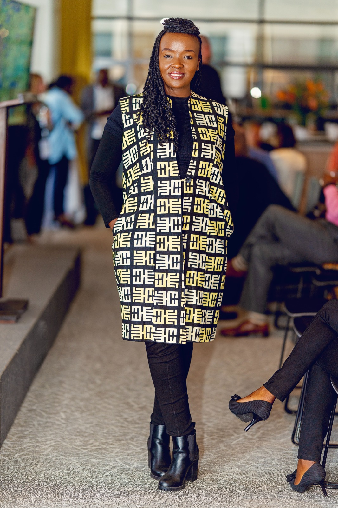

Who We Are
Africa's go-to boutique for fintech-energy infrastructure market entry and partnership architecture
The only boutique advisory that has scaled a fintech to 22 markets AND infrastructure AND been Techstars-validated
To be the definitive bridge between global capital, expertise, and Africa's transformative development agenda — creating partnerships that endure.
A world where strategic partnerships drive equitable, sustainable prosperity — powered by informed decisions and trusted advisory relationships.
Meet the Founder



With over 18 years of experience in sustainability, business development, and strategic alliances, Hanisa specializes in crafting high-impact, scalable solutions tailored to Africa's unique challenges and opportunities.
She has collaborated with governments, NGOs, and private sector leaders to drive projects across clean water access, green energy, and women's financial inclusion — always connecting local needs with global sustainability goals.
Experience across banks, MFIs, SACCOs, and telecom-led growth initiatives — supporting inclusion strategy, partnerships, market access, and commercial expansion.
Advisory across solar energy, green credits, carbon markets, and climate finance — connecting impact goals with commercial execution.
Recruitment strategy, training design, and capacity building for organizations that need teams equipped to execute ambitious growth plans.
Go-to-market strategy, team training, and commercial setup for solar inverter expansion across Africa.
Strategic partnerships with banks and MFIs across Kenya and Rwanda to scale clean energy access.
Fractional market expansion across Ghana, Rwanda, Uganda, Tanzania, and UAE. B2B partnerships and C2C sales strategy.
Fractional growth consulting — market strategy, team training, and business development support.
Strategic partnerships, team recruitment, and conference pitching for micro-insurance platform expansion.
Business development, commercial model review, and strategic partnerships across Tanzania, Uganda, Rwanda, and Kenya.
Founder in the Field
Representing organizations, building partnerships, and driving growth across markets.

Expertise in National ID programs, MOSIP-based implementations, trust frameworks, and banking/financial inclusion ecosystems across Africa.

Hanisa moderated the panel discussion at the launch of SunKing's new solar inverter business line in Africa.

With the Ministry of Foreign Affairs to pitch the SAWA Can and Bag for clean water access.
Our Team
A growing team of dedicated professionals committed to driving impact across every engagement.
Our team is growing — additional members and their profiles will be added soon.
Reach out to explore how the LynchPin can support your organization's next chapter.
Contact Us